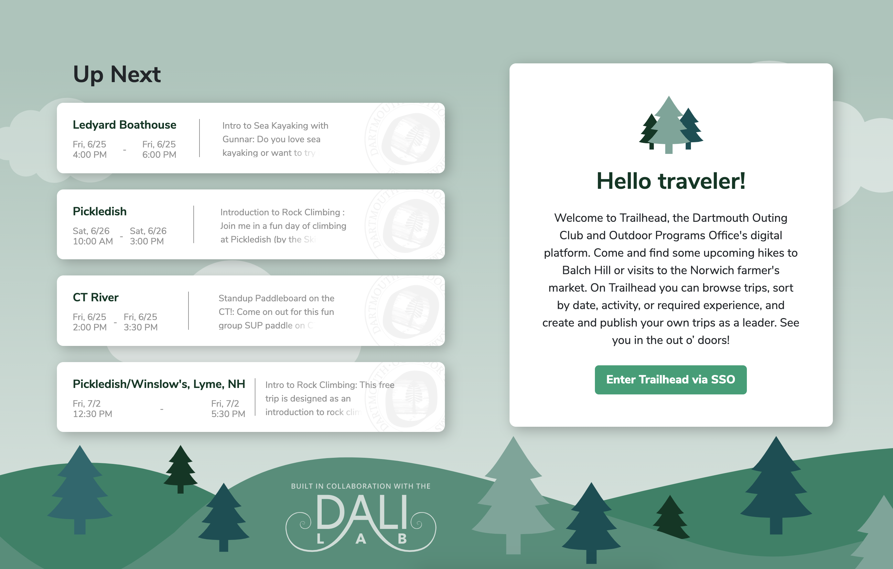
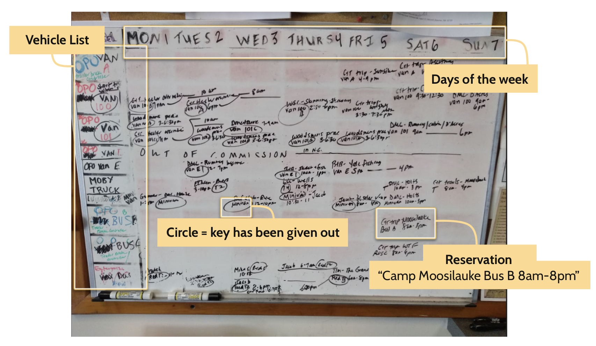
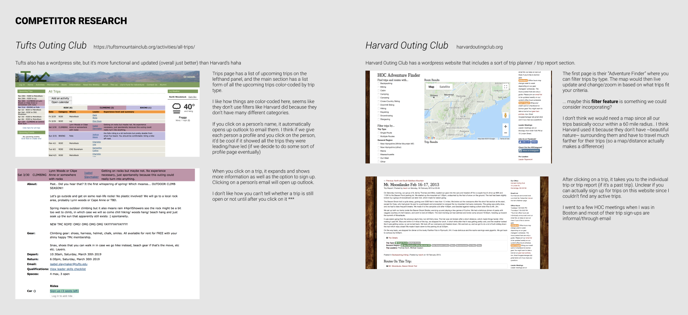
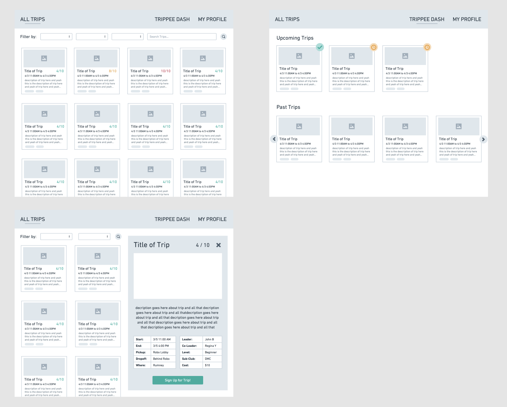
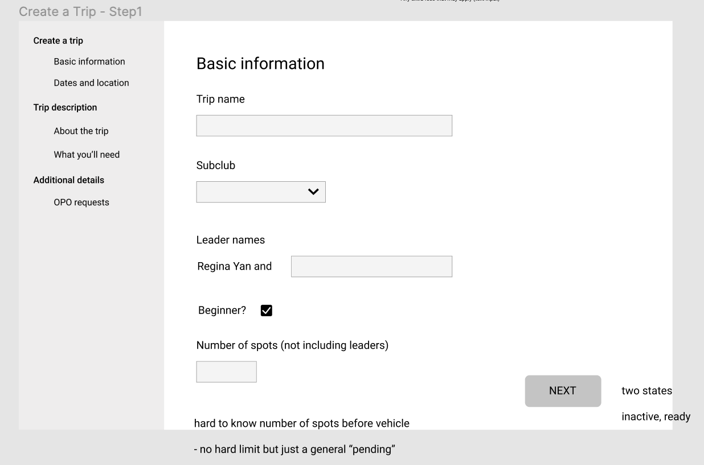
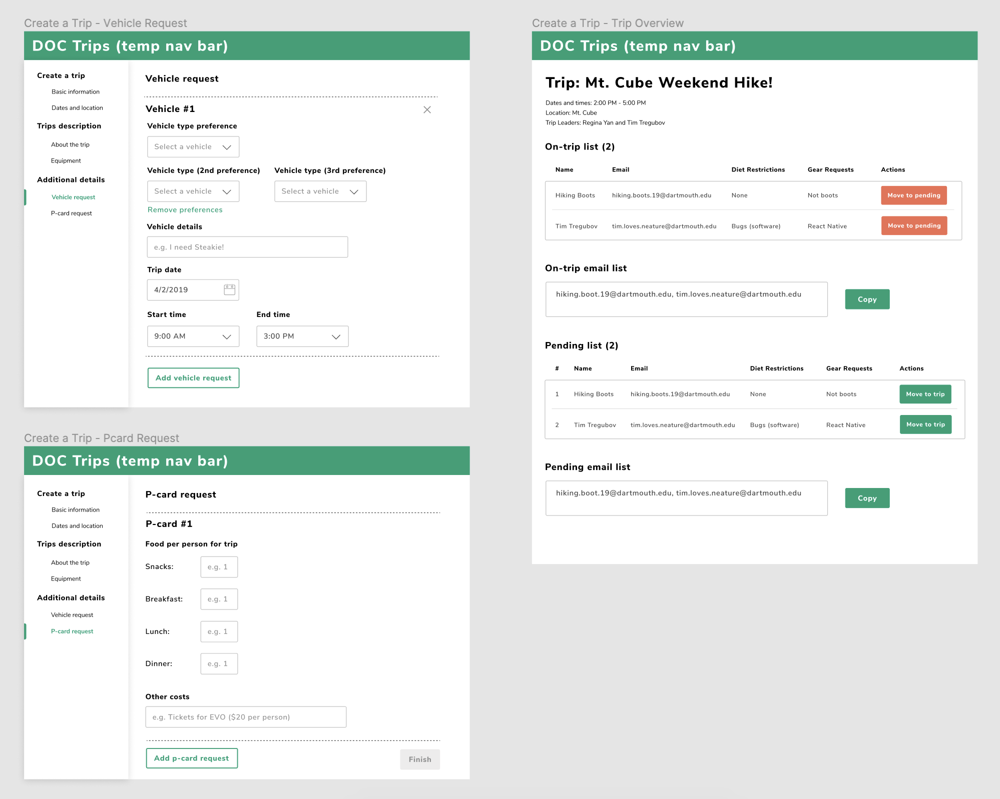
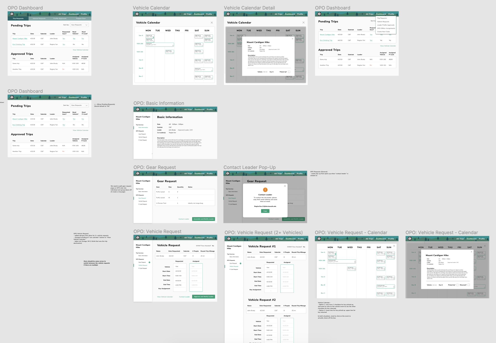
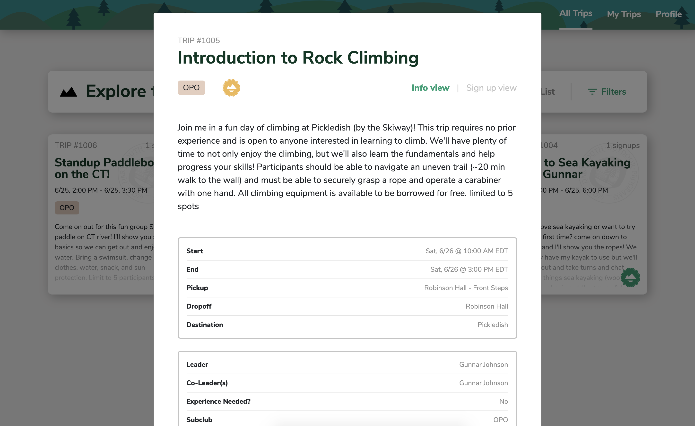
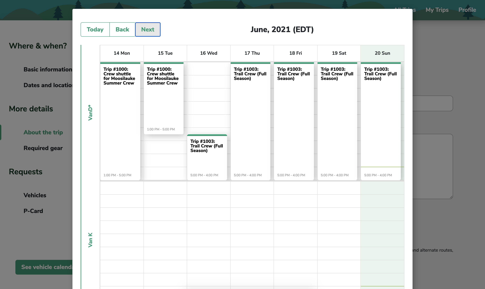
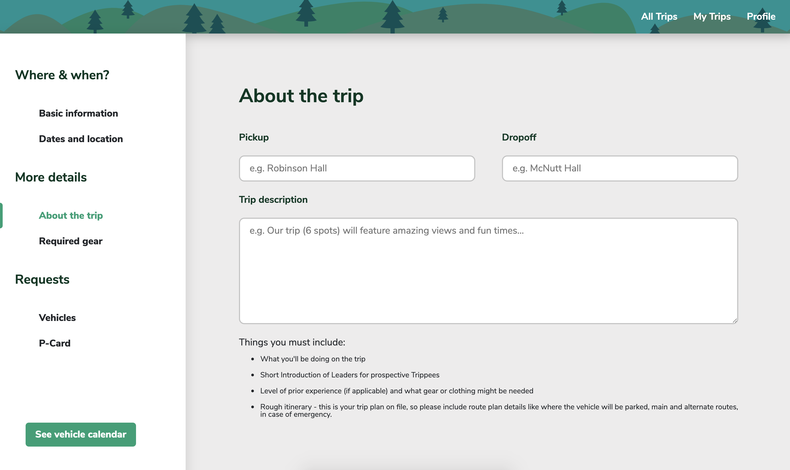

Trailhead
The Dartmouth Outing Club is the nation's oldest and largest student-led outdoors club. Trips ranging from "beginner climbing trip to Rumney" to "overnight cabin camping" to "whitewater rafting down the Connecticut River" run multiple times a week. Before Trailhead, trips for each "sub-club" were advertised through sub-club email and in-person meetings. Sign-ups were managed through independent spreadsheets. Car rentals and gear logistics were handled through Outdoor Programs Office staff with paper systems in place. Students and staff needed one central location for trips exploration and organization, and Trailhead was the perfect solution.
Explore the Site
How might we make trips more accessible to the student body?
Most sub-clubs host weekly "feeds" where members get together, eat a home-cooked meal, discuss the week's excursions, and plan the following week's trips. Attendees (called "trippees") can sign up for trips during these meetings.
While feeds and trips are open to the student body, folks outside of the Outing Club circle often don't know about the trips or don't feel comfortable attending. Trailhead aims to bridge the gap between the Outing Club and the students by making trips more accessible and transparent.
While feeds and trips are open to the student body, folks outside of the Outing Club circle often don't know about the trips or don't feel comfortable attending. Trailhead aims to bridge the gap between the Outing Club and the students by making trips more accessible and transparent.
How might we consolidate the trips planning process?
The trip planning process involves two main stages: 1) Planning trip information and managing sign-ups, and 2) Acquiring vehicle rentals, equipment, and a credit card ("p-card"). The former is managed through paper sign-ups, spreadsheets, and emails. The latter involves the Outdoor Programs Office, a group of staff who use whiteboards and paper/pencil to approve and track trips. Trailhead should act as a centralized platform for all planning activities

Vehicle Calendar Whiteboard
Competitor Research

Low-Fidelity Mockups
 
High-Fidelity Mockups
 
Screenshots of Live Site
Landing Page

Trips Sign-Up Dialogg

Vehicle Calendar Dialog

"Create a Trip" Form